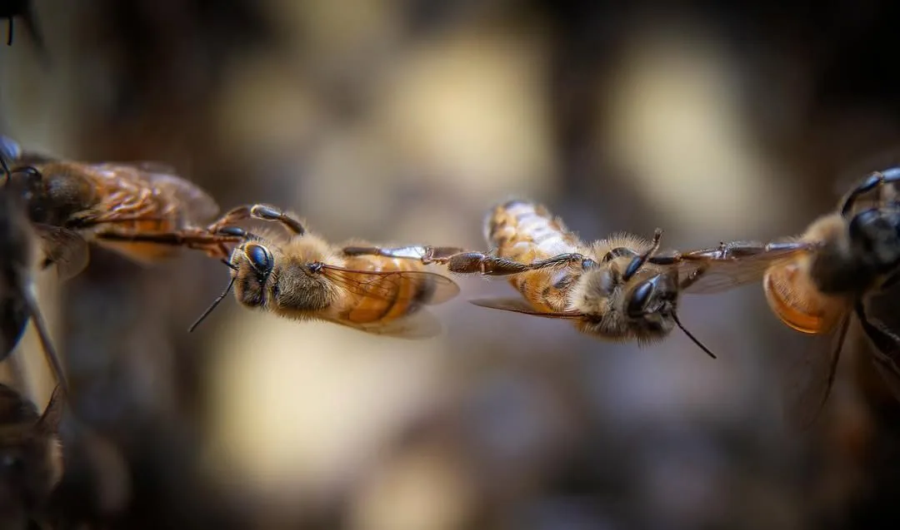

40°52′N · 15°18′E · 650 m s.l.m.
Un luogo precisosu una mappa
L'Oasi WWF di Conza della Campania è il motore di tutto quello che facciamo. Argille, acque, fioriture selvatiche, vento dell'Appennino: ogni elemento di questo paesaggio finisce nei nostri vasetti.
- Altitudine dell'apiario
- 650 m
- Oasi protetta WWF
- 3.700 ha
- Specie di uccelli
- ~170
- Specie botaniche mellifere
- 40+

Il bacino
Un'opera dell'uomodiventata natura
Costruito negli anni Ottanta come invaso sul fiume Ofanto, il Lago di Conza ha trasformato un'area agricola in un ecosistema. L'acqua ha richiamato la vegetazione, la vegetazione gli insetti, gli insetti le api.
Oggi il lago è il centro di un corridoio ecologico che collega l'Appennino lucano al Sele. Sulle rive crescono canneti, saliceti e prati umidi, dove vivono la natrice tassellata, il falco pescatore, l'airone cenerino.
Il lago regola anche le stagioni del miele: la massa d'acqua ammorbidisce le gelate di primavera, allunga le fioriture estive e favorisce la raccolta tardiva.

Il suolo
Le argilleche si sentononel miele
I suoli intorno a Conza sono in gran parte argillosi, resti del fondale marino del Miocene sollevati con la nascita dell'Appennino. L'argilla trattiene l'umidità nei mesi secchi, così le piante fioriscono più a lungo, e cede minerali a chi vi affonda le radici.
La sulla ne è l'esempio più chiaro: ama i suoli pesanti e restituisce il minerale come una lieve nota erbacea e salina nel miele. Per questo parliamo di cru: come in un vino di territorio, il suolo è un ingrediente.
Sulla mappa
Dove nasceil miele
La mappa usa OpenStreetMap: caricandola, il tuo indirizzo IP arriva ai loro server.
- Apiario Priscilla
- Oasi WWF e lago
- Zone di fioritura
L'ecosistema
Biodiversità,cioè qualità
Le api di Priscilla non hanno davanti una monocoltura, ma un paesaggio. Ogni pianta in fiore aggiunge una sfumatura; ogni specie che vive qui è un segno di equilibrio.
Sulla
Hedysarum coronarium, leguminosa annuale che fiorisce a maggio sui suoli argillosi. Fiori rosso porpora ricchi di nettare. È la base del nostro Cru delle Argille.
Robinia
Originaria del Nord America, naturalizzata nei valloni umidi. Fiorisce solo 8–12 giorni, ma è molto nettarifera: ne nasce un miele limpido che cristallizza lentamente.
Millefiori selvatico
Trifoglio, erba medica, sulla, centaurea, borragine, cisto, timo, origano. Più specie fioriscono, più articolato è il profilo del nostro Millefiori.
Gli uccelli dell'Oasi
Falco pescatore, airone cenerino, mignattino piombato, martin pescatore, tarabusino. Dove vivono specie così sensibili, l'ambiente è sano: anche per le api.
La fauna del lago
Luccio, carpa, tinca, anguilla, gambero di fiume. La qualità dell'acqua, monitorata dal WWF, sostiene gli habitat ripariali dove crescono le piante mellifere.
Impollinatori selvatici
Bombi, osmie, farfalle Vanessa e Polyommatus. Le nostre Apis mellifera ligustica condividono il territorio con decine di specie selvatiche.
Il ritmo del territorio
Le quattro stagionidell'apiario
Primavera
Marzo – Maggio
- Risveglio delle famiglie
- Fioritura della sulla (maggio)
- Fioritura dell'acacia (aprile–maggio)
- Prima smielatura dell'anno
- Ispezioni e sciamatura
Estate
Giugno – Agosto
- Raccolta del millefiori
- Fioriture tardive: origano, timo
- Smielatura principale
- Monitoraggio della varroa
- Gestione del calore nell'alveare
Autunno
Settembre – Novembre
- Preparazione all'inverno
- Scorte di miele per le api
- Trattamenti antiparassitari
- Ispezione finale delle arnie
- Raccolta dei dati della stagione
Inverno
Dicembre – Febbraio
- Api a riposo nel glomere
- Manutenzione delle arnie
- Analisi e studi botanici
- Pianificazione della stagione
- Contatti con chi aspetta l'annata
In numeri
Un annonell'apiario
- Il raggio che le api battono intorno all'apiario
- 18–25 km
- Di miele per arnia in una buona stagione
- 60+ kg
- Api in un'arnia al picco estivo
- 50.000
- Giorni di fioritura dell'acacia
- 8–12
Un'ape vola in media 3–5 km per raccolta: il territorio dell'apiario Priscilla è un cerchio di circa 25 km intorno a Conza.
Con una primavera favorevole un'arnia può produrre 60–80 kg; negli anni di siccità o gelate tardive si scende a 20–30 kg.
Un'arnia sana in estate conta 50.000–80.000 api. Un'operaia vive 6–7 settimane.
Pioggia, vento o caldo anomalo possono ridurre la finestra a 5 giorni, e azzerare la raccolta.